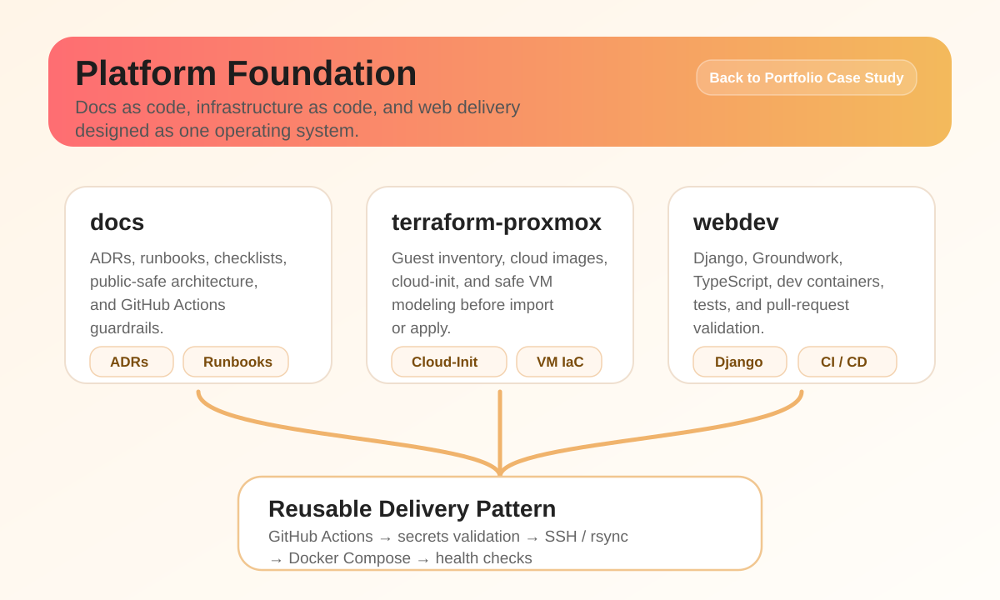
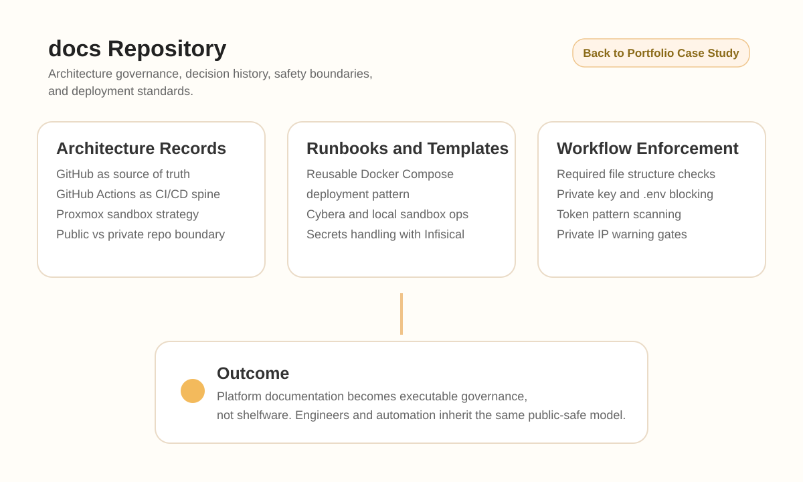
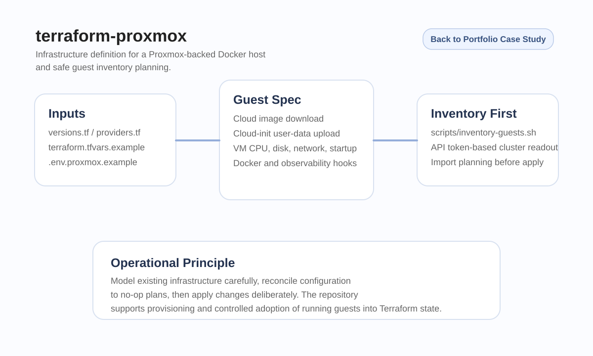
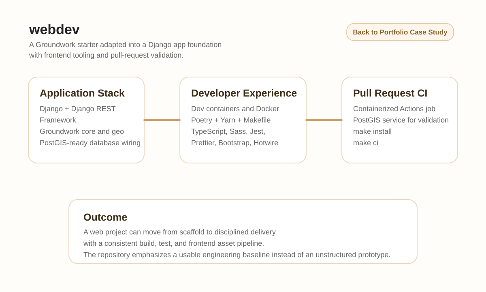
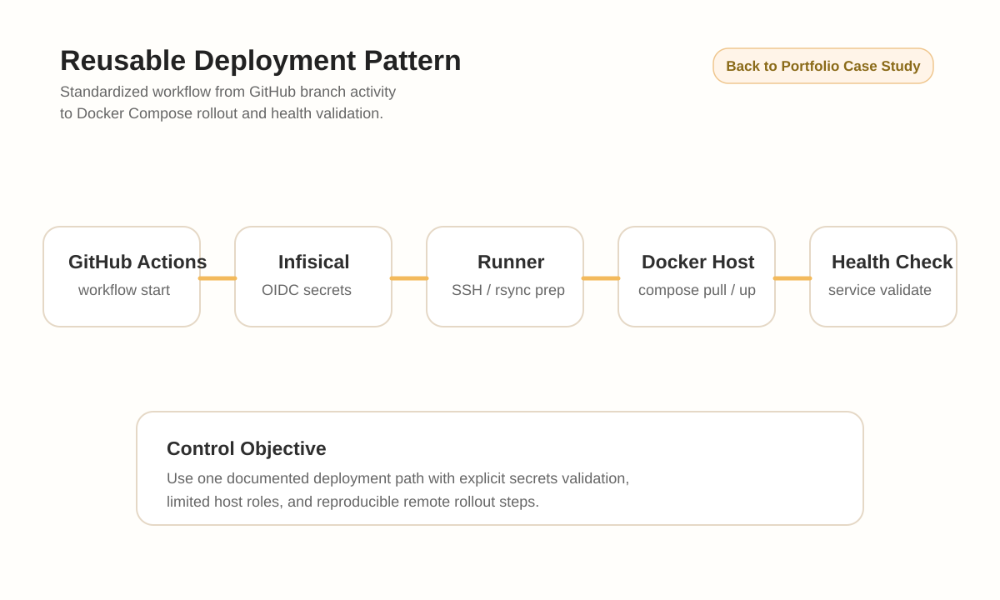

Portfolio Case Study
Platform Engineering Foundation: Docs, Terraform, and Secure Delivery
This project shows how I design platforms the way strong engineering organizations actually need them: documented, reviewable, automated, and safe to operate. It combines architecture governance, Proxmox infrastructure-as-code, and application delivery standards into one practical foundation for scaling teams and environments.

Executive Summary
Project Overview
This case study combines three related repositories: a documentation system of ADRs, runbooks, and GitHub Actions policy checks; a Terraform workspace for Proxmox guest provisioning and inventory planning; and a Django and Groundwork application foundation with frontend tooling and pull-request validation.
The real value is in the integration. Instead of treating documentation, infrastructure, CI, and deployment operations as disconnected tasks, this work turns them into a single platform discipline with clearer standards, safer change paths, and stronger operational handoff.
Scope
What I Built
- Documentation-as-code structure with architecture decision records, runbooks, checklists, user stories, and public-safe project summaries.
- GitHub Actions validation patterns that enforce documentation presence, secret hygiene, and reusable deployment workflow structure.
- Terraform workspace for Proxmox cluster configuration, cloud image handling, guest inventory collection, and safe import planning.
- Parameterized guest definition for a Docker host with cloud-init, observability hooks, and environment-specific local inputs.
- Django and Groundwork application scaffold with Docker, dev containers, TypeScript and Vite assets, and CI-backed lint and test execution.
- Reusable deployment pattern connecting GitHub Actions, Infisical, SSH orchestration, Docker Compose rollout, and health validation.
Why It Matters
Employer Value
- This work demonstrates that I do more than stand up systems. I build the engineering structure that makes teams safer, faster, and easier to scale.
- It shows cross-functional ownership: architecture, security boundary thinking, infrastructure automation, CI workflow design, deployment standards, and application delivery enablement.
- It is directly relevant to platform engineering, DevOps leadership, SRE-adjacent delivery, and manager-level roles where repeatability and governance matter as much as technical execution.
Technical Depth
Technical Highlights
Docs as Control Plane
Architecture rules, safety boundaries, and runbooks are kept versioned and validated in GitHub before downstream automation depends on them.
Infrastructure Reconciliation
Terraform is used not only for new builds, but also to inventory and safely model existing Proxmox guests before import and apply.
App Delivery Foundation
The web application stack pairs Django, Groundwork, PostGIS, TypeScript, and containerized CI so application work starts from a structured baseline.
Deployment Standardization
Reusable GitHub Actions and Docker Compose patterns reduce one-off deployment logic and make secret handling and health checks explicit.
Evidence
Evidence Gallery
These diagrams summarize the repository work in a public-safe format. Each panel opens the full-size diagram in a new tab for easier review.

Documentation Governance
The docs repository defines architecture principles, decision records, reusable deployment templates, and safety checks that block obvious secrets and required-structure regressions.
Open full-size diagram
Terraform Proxmox Workspace
The infrastructure repository models cluster inputs, downloads cloud images, configures VM initialization, and supports guest inventory before state import or change rollout.
Open full-size diagram
Web Application Delivery
The application repository combines Django, Groundwork, Vite, Jest, dev containers, and pull-request CI so web delivery starts from a repeatable engineering base.
Open full-size diagram
Reusable Deployment Pattern
GitHub Actions, Infisical, SSH coordination, rsync sync, Docker Compose rollout, and health checks are documented and templated into a reusable release flow.
Open full-size diagramLeadership
Leadership Value
This project shows platform leadership through the integration of policy, documentation, infrastructure automation, and application delivery. The value is not just in any single repo, but in the consistency created across planning, provisioning, validation, deployment, and operational handoff.
For an employer, this is evidence that I can build the systems behind engineering teams, not just contribute one isolated technical component. I can define standards, codify them, and turn them into workflows that teams can trust.